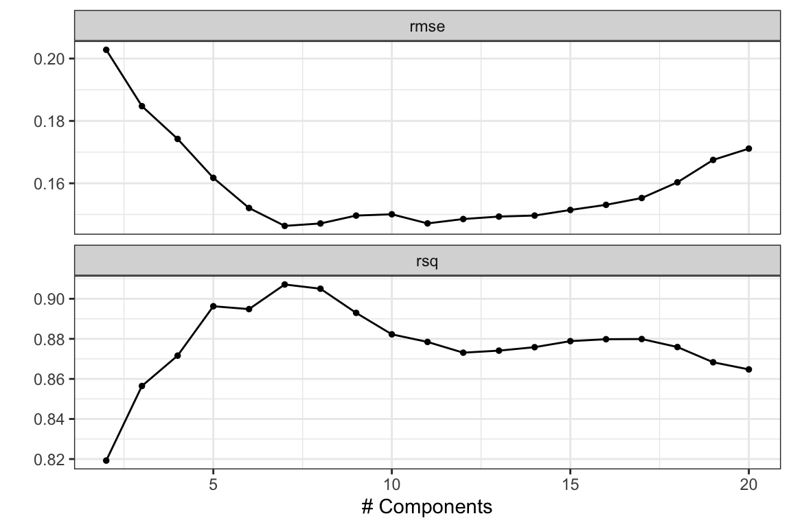
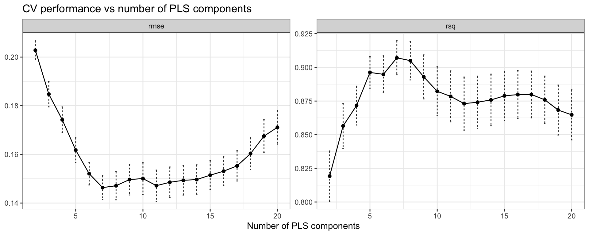
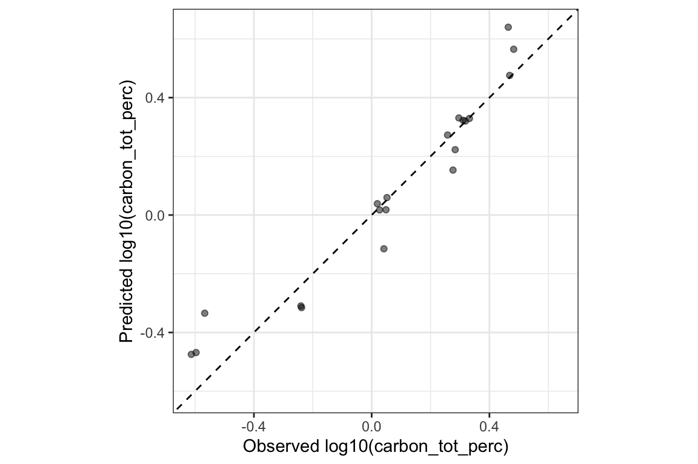

library(here)
library(tidyverse)
library(tidymodels)
library(skimr)
library(plsmod)
source(here("R", "prepare_data.R"))
source(here("R", "steps.R"))
source(here("R", "split.R"))
source(here("R", "config.R"))
theme_set(theme_bw())
tidymodels_prefer()Evaluating performance
Split the data, fit a model, and score it with tidymodels.
The full pipeline already tuned this same model on this same data. It picked a number of components with select_best(). This page runs the same tuning in more depth: the CV curve behind that choice, and select_by_one_std_err() as a simpler alternative to picking the single best value.
References:
- Tidy Modeling with R, chapter 10: Resampling for evaluating performance
- Tidy Modeling with R, chapter 12: Model tuning and the dangers of overfitting
rsample::vfold_cv()andtune::select_by_one_std_err()- Breiman, L., Friedman, J., Olshen, R. and Stone, C. (1984). Classification and Regression Trees. Wadsworth.
- Hastie, T., Tibshirani, R. and Friedman, J. (2009). The Elements of Statistical Learning, section 7.10.
- Bengio, Y. and Grandvalet, Y. (2004). No unbiased estimator of the variance of K-fold cross-validation. Journal of Machine Learning Research, 5, 1089–1105.
SPECTRA_DIR = here("data/RT_spectra")
SOIL_PROP_FILE = here("data/RT_wetchem_soildata.csv")TARGET <- "carbon_tot_perc"Getting data
EXCLUDED_SAMPLES, RT_44 and RT_42, are left out. Outlier detection flags their spectra as the two most unusual. RT_44 has almost no lab data. RT_42 is not a measurement error. It is most likely an organic soil, such as a peat: its total and organic carbon are both 49%, and its pH is 3.3. A model cannot learn a soil type from a single sample, so leaving RT_42 out is a judgement about what the model can cover, not only a distance rule.
data <- prepare_rt(SPECTRA_DIR, SOIL_PROP_FILE) |> filter(!smp_id %in% EXCLUDED_SAMPLES)Splitting the data
The test set is set aside first. It stays untouched until the last step, last_fit(). Every decision before that, including the number of PLS components, uses the training set only. Otherwise the test score would be optimistic: the model would have been chosen partly because it did well on those same samples.
kennard_stone_split(), defined in R/split.R, chooses the training samples so that they cover the spectral space evenly. It works on PCA scores of the SNV-corrected spectra. It starts from the two most distant samples, then keeps adding the sample furthest from those already chosen. The test samples then fall inside the range the model has seen. initial_split() is the random alternative.
split <- kennard_stone_split(data, prop = 50/70, cols = starts_with("wn_"))
# or
# split <- initial_split(data, prop = 50/70)Cross-validation folds
What vfold_cv() does
The model has one setting to choose: the number of PLS components. Each candidate value needs a score on samples the model has not seen. The training set cannot give that score. Training error keeps falling as components are added, even after the extra components only fit noise. The test set cannot give it either, because it must stay untouched.
Cross-validation makes held-out data from the training set itself. vfold_cv() shuffles the 48 training samples and deals them into v = 10 groups, called folds, of 4 to 6 samples each. Each fold takes a turn as the assessment set. The model is fitted on the other 9 folds, 42 to 44 samples, and scored on the held-out fold. After 10 rounds, every training sample has been predicted once by a model that did not see it. The 10 fold scores are averaged into one estimate.
tune_grid() runs the whole workflow inside every fold, recipe included. The recipe is prepped on the 9 fitting folds only. Nothing learnt from the held-out fold leaks into the model.
Stratification
strata = all_of(TARGET) with breaks = 2 splits carbon_tot_perc at its median into a low half and a high half. Samples from each half are then dealt out evenly across the folds, so every fold gets a mix of low-carbon and high-carbon soils. Without this, a fold of 5 samples could hold only high-carbon soils by chance. Its score would then say more about that bad luck than about the model. Two bins is a coarse split. With only 4 to 6 samples per fold, a finer one would add little. The split uses the raw values, before step_log(). A median split gives the same two halves on either scale. all_of() tells vfold_cv() that TARGET holds a column name as a string. A bare strata = TARGET still works, but gives a deprecation warning.
Why repeat
A single 10-fold run depends on one random way of dealing the samples into folds. Shuffle again and the estimate changes. Each fold scores only 4 to 6 samples, so the RMSE of a single fold is very noisy. repeats = 10 runs the whole 10-fold procedure 10 times, each time with a new shuffle. That gives 100 fold scores per candidate instead of 10, and their mean is more stable.
NoteStandard error and the central limit theorem
Take \(n\) independent measurements, each with standard deviation \(\sigma\). Their mean has a standard deviation of \(\sigma / \sqrt{n}\). This is the standard error of the mean. The central limit theorem adds that the mean is approximately normally distributed as \(n\) grows, whatever the shape of the individual measurements. So the mean ± 2 standard errors gives a rough 95% range for the true value.
The gain follows a square root. 4 times more measurements halve the standard error. 100 fold scores instead of 10 cut it by \(\sqrt{10} \approx 3.2\).
collect_metrics() reports exactly this. Its std_err column is the standard deviation of the fold scores divided by \(\sqrt{n}\), with n = 100 here.
Why the gain is smaller than it looks
The \(\sigma / \sqrt{n}\) formula needs independent measurements. The 100 fold scores are not independent:
- Within one repeat, any two fitting sets share 8 of their 9 folds, about 90% of their samples. The models they produce are very similar.
- Across repeats, the same 48 samples are reshuffled. No new soil ever enters.
Repeating averages away the noise that comes from how the folds were dealt. It cannot remove the noise that comes from which 48 soils were collected. A different set of 48 soils from the same region would give a different curve. No amount of repeating on the current set shows that.
The effective number of independent measurements is therefore much smaller than 100, and std_err is too small. Read it as a lower bound on the real uncertainty. It is still useful to compare candidates with each other, because they all use the same folds. There is no simple fix. Bengio and Grandvalet (2004) show that no unbiased estimator of the variance of k-fold cross-validation exists.
set.seed(123)
folds <- vfold_cv(
training(split),
v = 10,
repeats = 10,
strata = all_of(TARGET),
breaks = 2
)Model
The recipe is the one Feature engineering builds step by step, here with carbon_tot_perc as the outcome.
spc_cols <- names(data)[startsWith(names(data), "wn_")]
meta_cols <- setdiff(names(data), c(TARGET, spc_cols))
rec <- recipe(data) |>
update_role(all_of(TARGET), new_role = "outcome") |>
update_role(all_of(spc_cols), new_role = "predictor") |>
update_role(all_of(meta_cols), new_role = "metadata") |>
step_log(all_outcomes(), base = 10) |>
step_resample(grid = RESAMPLING_GRID) |>
step_snv() |>
step_sg(w = SG_W, p = SG_P, m = SG_M)pls() specifies a partial least squares regression, fitted with the mixOmics engine. num_comp = tune() leaves the number of components open. tune_grid() fills it in later.
pls_spec <- pls(num_comp = tune()) |>
set_engine("mixOmics") |>
set_mode("regression")A workflow bundles the recipe and the model. Both are then fitted together inside each fold.
wf <- workflow() |>
add_recipe(rec) |>
add_model(pls_spec)Tuning the number of components
The grid lists the candidate values: 2 to 20 components, 19 candidates.
num_comp_grid <- tibble(num_comp = 2:20)tune_grid() fits the workflow for every candidate in every fold: 19 candidates × 100 folds, 1,900 fits. Each fit is scored on its held-out fold with the default regression metrics, RMSE and R².
tune_res <- tune_grid(
wf,
resamples = folds,
grid = num_comp_grid
)collect_metrics() gives one row per candidate and metric. mean is the average of the 100 fold scores. n is the number of fold scores. std_err is their standard deviation divided by \(\sqrt{n}\), as described above. RMSE is in log10 units, because step_log() transformed the outcome.
collect_metrics(tune_res)# A tibble: 38 × 7
num_comp .metric .estimator mean n std_err .config
<int> <chr> <chr> <dbl> <int> <dbl> <chr>
1 2 rmse standard 0.203 100 0.00389 pre0_mod01_post0
2 2 rsq standard 0.819 100 0.0187 pre0_mod01_post0
3 3 rmse standard 0.185 100 0.00523 pre0_mod02_post0
4 3 rsq standard 0.856 100 0.0167 pre0_mod02_post0
5 4 rmse standard 0.174 100 0.00528 pre0_mod03_post0
6 4 rsq standard 0.872 100 0.0145 pre0_mod03_post0
7 5 rmse standard 0.162 100 0.00510 pre0_mod04_post0
8 5 rsq standard 0.896 100 0.0117 pre0_mod04_post0
9 6 rmse standard 0.152 100 0.00464 pre0_mod05_post0
10 6 rsq standard 0.895 100 0.0138 pre0_mod05_post0
# ℹ 28 more rowsautoplot() draws the mean of each metric against the number of components.
autoplot(tune_res)
The plot below adds error bars of ±1 standard error. RMSE falls quickly over the first few components. It then rises again as the extra components start to fit noise in the fitting folds. The error bars show which differences between neighbouring candidates are within the noise.
collect_metrics(tune_res) |>
ggplot(aes(x = num_comp, y = mean)) +
geom_line() +
geom_errorbar(aes(ymin = mean - std_err, ymax = mean + std_err), width = 0.1, color = "grey20", linetype = "22") +
geom_point(size=1.5) +
facet_wrap(~ .metric, scales = "free_y") +
labs(x = "Number of PLS components", y = NULL,
title = "CV performance vs number of PLS components")
Choosing the number of components
select_best() returns the candidate with the lowest mean RMSE.
best_rmse <- select_best(tune_res, metric = "rmse")
best_rmse# A tibble: 1 × 2
num_comp .config
<int> <chr>
1 7 pre0_mod06_post0The one-standard-error rule
select_best() treats the smallest mean as the winner, even when a simpler candidate scores almost the same. With PLS, fewer components means a simpler model. A simpler model is usually more stable on new samples, and less likely to have fitted quirks of the training set. The one-standard-error rule, from Breiman et al. (1984) and described in Hastie et al. (2009), makes that trade-off explicit. It picks the simplest candidate whose score is within one standard error of the best.
select_by_one_std_err(tune_res, metric = "rmse", num_comp) does this in 5 steps:
- It keeps only the
rmserows ofcollect_metrics(tune_res). - It finds the candidate with the lowest mean RMSE. This is the one
select_best()returns. - It computes a bound: the best mean plus the
std_errof the best candidate. Only the standard error of the best candidate is used, not that of each candidate. - It keeps every candidate whose mean RMSE is at or below the bound. The best candidate always qualifies.
- It sorts those candidates by the arguments passed after
metric, herenum_compin ascending order, and returns the first row.
The last argument defines what “simplest” means. The function cannot guess it. For PLS, fewer components is simpler, so num_comp sorts in the right direction. For a penalised regression, a larger penalty is simpler, and the call would need desc(penalty) instead.
The rule inherits the weakness of std_err. That value is too small here, as explained above, so the bound is tight. The rule stays closer to select_best() than it would with a realistic standard error.
best_1se <- select_by_one_std_err(tune_res, metric = "rmse", num_comp)
best_1se# A tibble: 1 × 2
num_comp .config
<int> <chr>
1 7 pre0_mod06_post0The chunk below applies the same steps by hand, so each value is visible.
rmse_res <- collect_metrics(tune_res) |> filter(.metric == "rmse")
best_row <- rmse_res |> slice_min(mean, n = 1, with_ties = FALSE)
bound <- best_row$mean + best_row$std_err
rmse_res |>
mutate(within_bound = mean <= bound) |>
select(num_comp, mean, std_err, within_bound)# A tibble: 19 × 4
num_comp mean std_err within_bound
<int> <dbl> <dbl> <lgl>
1 2 0.203 0.00389 FALSE
2 3 0.185 0.00523 FALSE
3 4 0.174 0.00528 FALSE
4 5 0.162 0.00510 FALSE
5 6 0.152 0.00464 FALSE
6 7 0.146 0.00494 TRUE
7 8 0.147 0.00578 TRUE
8 9 0.150 0.00633 TRUE
9 10 0.150 0.00652 TRUE
10 11 0.147 0.00641 TRUE
11 12 0.149 0.00626 TRUE
12 13 0.149 0.00606 TRUE
13 14 0.150 0.00604 TRUE
14 15 0.151 0.00593 FALSE
15 16 0.153 0.00599 FALSE
16 17 0.155 0.00622 FALSE
17 18 0.160 0.00658 FALSE
18 19 0.167 0.00682 FALSE
19 20 0.171 0.00693 FALSE Here select_best() picks 7 components and the one-standard-error rule picks 7. When the two agree, the table shows how close the nearest simpler candidate came to the bound.
finalize_workflow() writes the chosen value into the workflow in place of tune(). The commented line shows how to set a value by hand, for example after reading the plot.
final_wf <- wf |> finalize_workflow(best_1se)
# or manually
# final_wf <- wf |> finalize_workflow(tibble(num_comp = 10))Final fit on the test set
last_fit() fits the finalised workflow once on the whole training set. It then predicts the test set and scores it. This is the first time the test set is used. No choice was made with it, so its score is a fair estimate of how the model does on new samples.
final_res <- final_wf |> last_fit(split)The test RMSE is in log10 units, like the cross-validation RMSE, so the two compare directly. A test RMSE close to the cross-validation mean suggests the tuning estimate was realistic. The test set is small, so some difference either way is expected.
collect_metrics(final_res)# A tibble: 2 × 4
.metric .estimator .estimate .config
<chr> <chr> <dbl> <chr>
1 rmse standard 0.0961 pre0_mod0_post0
2 rsq standard 0.924 pre0_mod0_post0collect_predictions() gives one row per test sample: the observed value and the prediction .pred, both in log10 units.
collect_predictions(final_res)# A tibble: 20 × 5
.pred id carbon_tot_perc .row .config
<dbl> <chr> <dbl> <int> <chr>
1 0.331 train/test split 0.296 4 pre0_mod0_post0
2 0.329 train/test split 0.332 5 pre0_mod0_post0
3 0.323 train/test split 0.311 7 pre0_mod0_post0
4 0.320 train/test split 0.318 13 pre0_mod0_post0
5 0.273 train/test split 0.258 17 pre0_mod0_post0
6 0.0386 train/test split 0.0192 18 pre0_mod0_post0
7 0.0595 train/test split 0.0521 19 pre0_mod0_post0
8 -0.334 train/test split -0.567 20 pre0_mod0_post0
9 -0.468 train/test split -0.596 26 pre0_mod0_post0
10 0.0180 train/test split 0.0487 29 pre0_mod0_post0
11 0.0174 train/test split 0.0269 30 pre0_mod0_post0
12 -0.115 train/test split 0.0415 37 pre0_mod0_post0
13 -0.475 train/test split -0.613 38 pre0_mod0_post0
14 0.565 train/test split 0.482 40 pre0_mod0_post0
15 0.153 train/test split 0.276 42 pre0_mod0_post0
16 -0.315 train/test split -0.238 44 pre0_mod0_post0
17 0.223 train/test split 0.284 47 pre0_mod0_post0
18 0.640 train/test split 0.464 49 pre0_mod0_post0
19 -0.310 train/test split -0.240 53 pre0_mod0_post0
20 0.476 train/test split 0.469 56 pre0_mod0_post0Points on the dashed line are perfect predictions. coord_obs_pred() puts both axes on the same scale, so the distance from the line reads the same in either direction.
collect_predictions(final_res) |>
ggplot(aes(x = .data[[TARGET]], y = .pred)) +
geom_abline(lty = 2) +
geom_point(alpha = 0.5) +
labs(x = "Observed log10(carbon_tot_perc)", y = "Predicted log10(carbon_tot_perc)") +
coord_obs_pred()